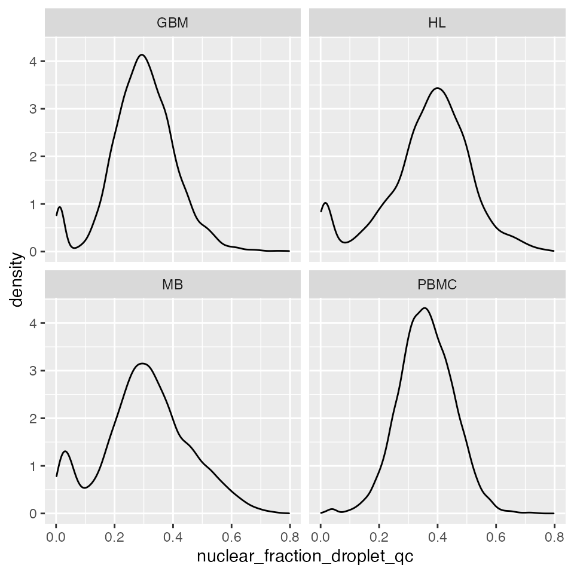
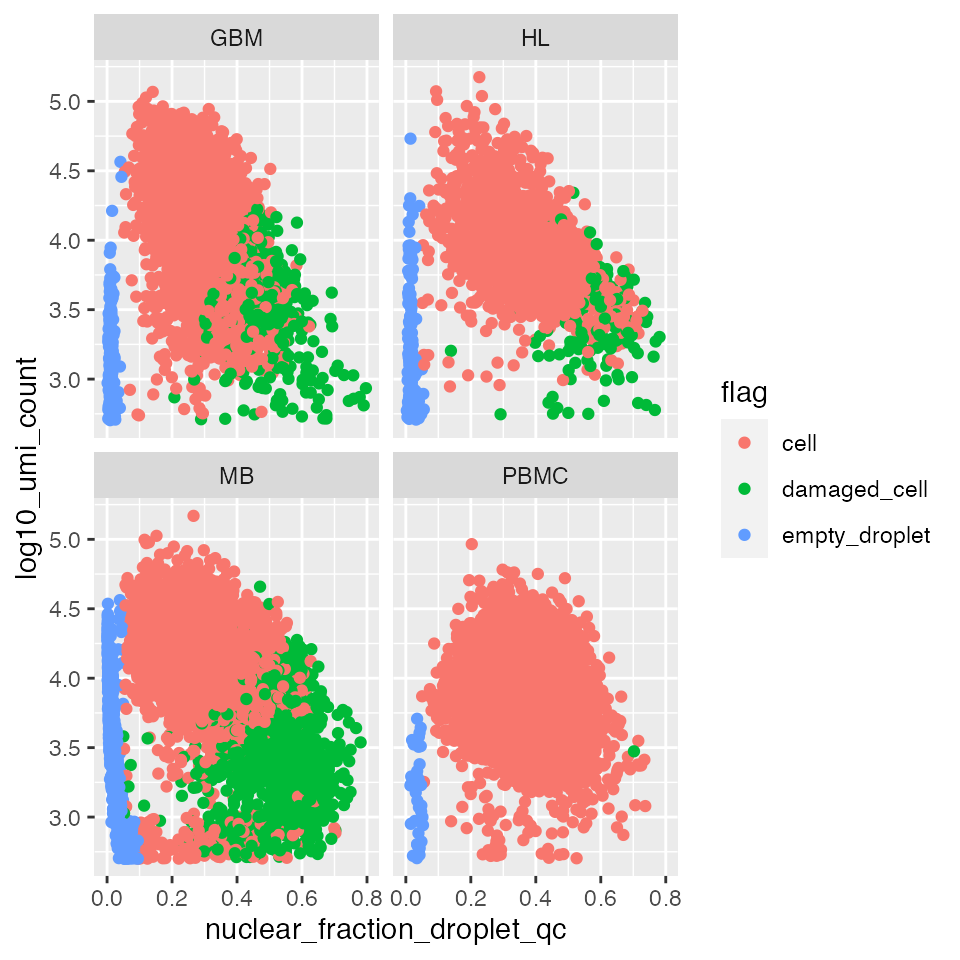
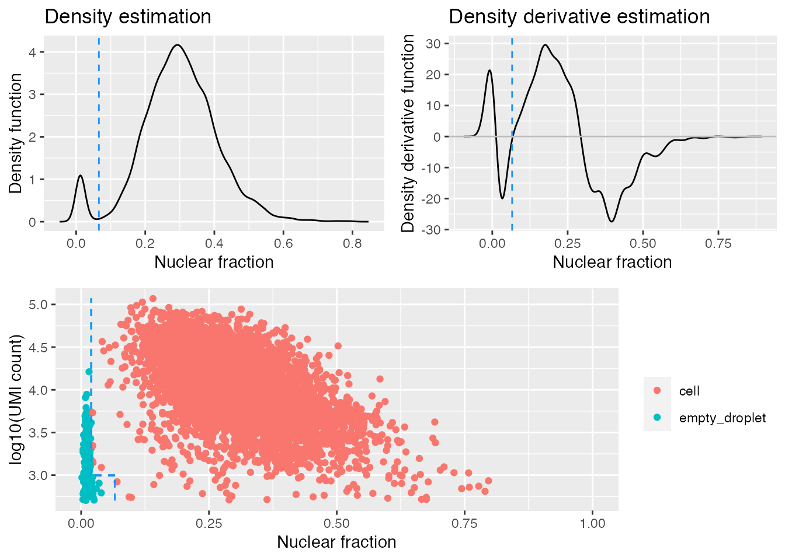
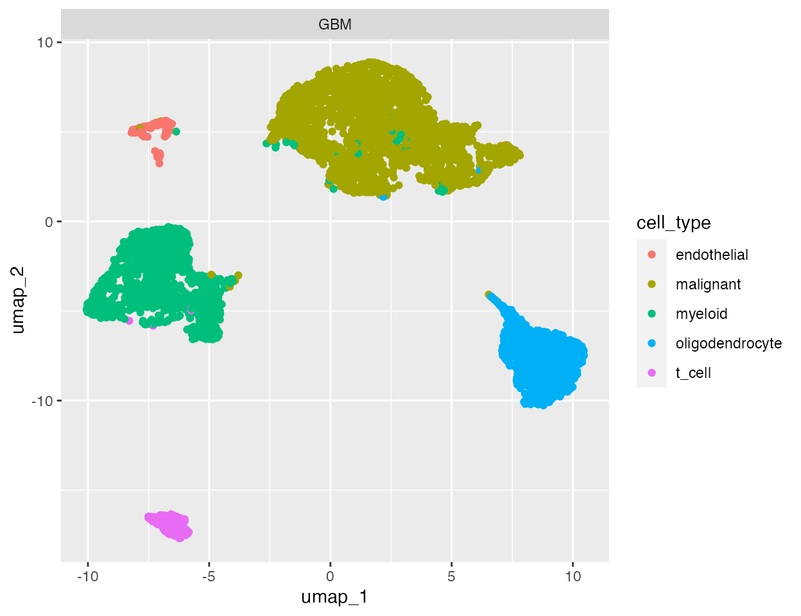
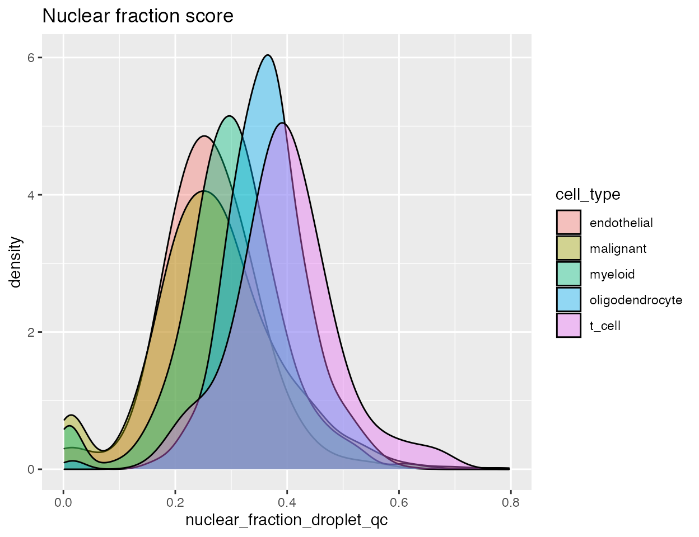
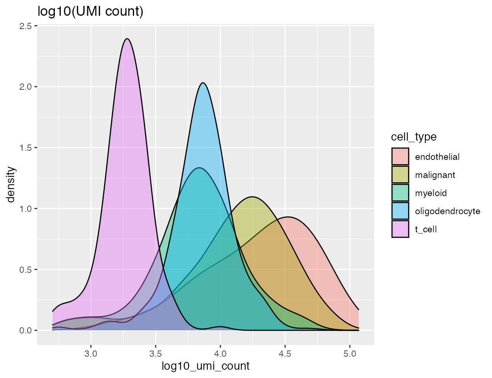
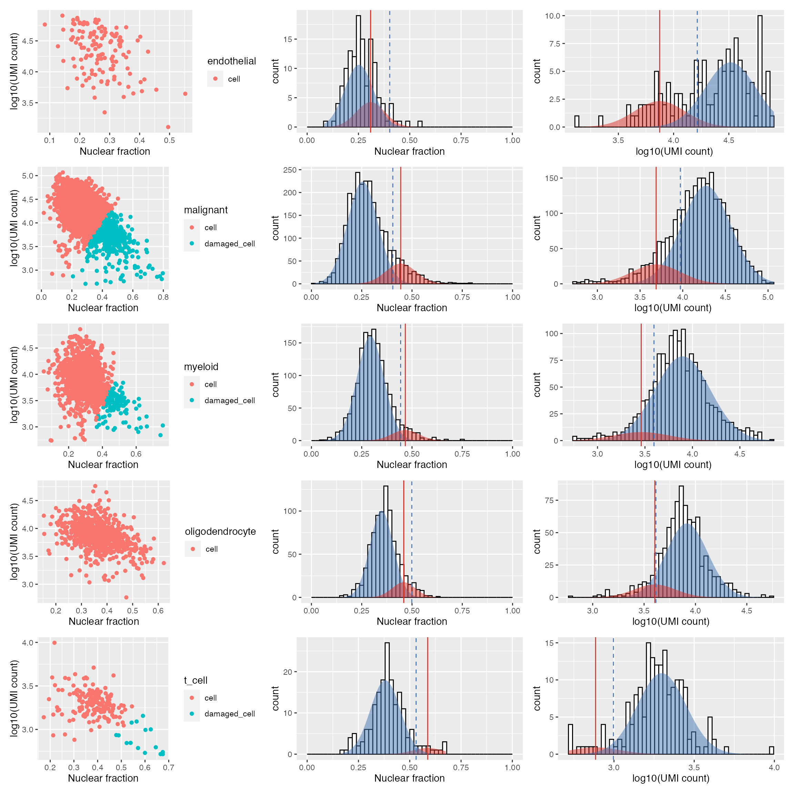
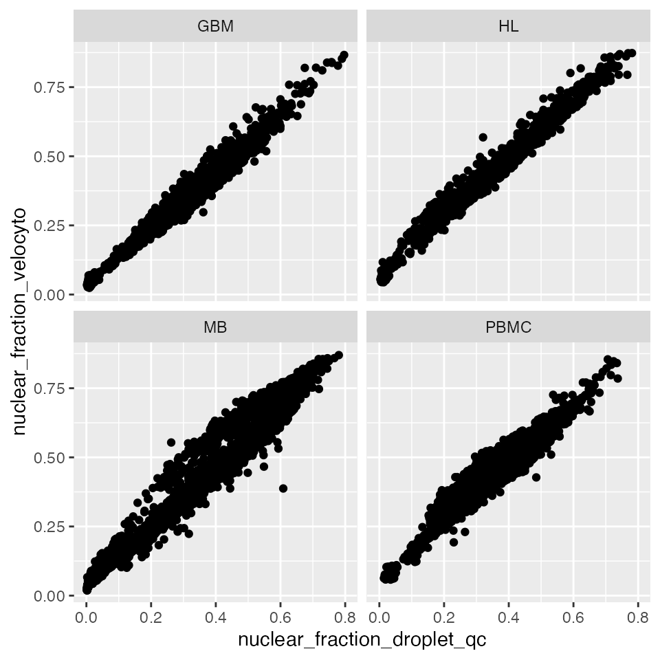

To calculate the nuclear fraction score for each provided cell barcode, you can use either the nuclear_fraction_tags or nuclear_fraction_annotation function. If your BAM file contains region tags which mark each read as exonic/intronic, such as the barcoded BAM files output by 10x Genomics’ Cell Ranger, then use the nuclear_fraction_tags function.
If your BAM file doesn’t contain region tags you can use the nuclear_fraction_annotation function and provide a gene annotation file. Each read in the BAM file will be assessed for overlap with exon and intron ranges extracted from the provided annotation. The genome build and chromosome names in the annotation should match the BAM file.
nf3 <- nuclear_fraction_annotation(annotation_path = system.file("extdata/outs/chr1.gff3", package = "DropletQC"),
bam = system.file("extdata/outs/possorted_genome_bam.bam", package = "DropletQC"),
barcodes = system.file( "extdata/outs/filtered_feature_bc_matrix/barcodes.tsv.gz",package = "DropletQC"),
tiles = 1, cores = 1, verbose = FALSE)
head(nf3)## nuclear_fraction
## AAAAGTCACTTACTTG-1 0.9032698
## AAAAGTGGATCTCTAA-1 0.4032761
## AAAGCAGTTACGAAGA-1 0.3957704
## AACGACTTCAATATGT-1 0.4004525
## AACGGCGTCATCTGGA-1 0.8845109
## AAGCAGGGGTCGCGAA-1 0.3929376Once the nuclear fraction score has been calculated for each cell barcode it can be used, in combination with the total UMI counts, to help identify empty droplets and then damaged cells using the identify_empty_drops and identify_damaged_cells functions sequentially.
We provide some pre-calculated nuclear fraction scores, as well as additional metrics, from four single cell RNA-seq datasets produced and made publicly available by 10x Genomics:
Mouse E18 Combined Cortex, Hippocampus and Subventricular Zone Cells, ~10k cells dataset link
Human Glioblastoma Multiforme, ~5k cells dataset link
PBMCs from a Healthy Donor, ~10k cells dataset link
Hodgkin’s Lymphoma, Dissociated Tumour, ~5k cells dataset link
Each dataset has been pre-filtered using DropletUtils::emptyDrops and a 15% mitochondrial gene content cutoff. The data can be loaded with data("qc_examples").
## sample cell_barcode umap_1 umap_2
## AAACCCAAGGCGATAC-1 GBM AAACCCAAGGCGATAC-1 -7.221113 -16.802812
## AAACCCAAGGCTGTAG-1 GBM AAACCCAAGGCTGTAG-1 -8.374323 -4.323620
## AAACCCACAAGTCCCG-1 GBM AAACCCACAAGTCCCG-1 2.303067 7.180564
## AAACCCACAGATGCGA-1 GBM AAACCCACAGATGCGA-1 -8.258726 -2.813064
## AAACCCACAGGTGAGT-1 GBM AAACCCACAGGTGAGT-1 8.892445 -7.549429
## AAACCCAGTCTTGCGG-1 GBM AAACCCAGTCTTGCGG-1 5.422224 5.287473
## seurat_clusters cell_type umi_count log10_umi_count
## AAACCCAAGGCGATAC-1 10 t_cell 2226 3.347525
## AAACCCAAGGCTGTAG-1 12 myeloid 1063 3.026533
## AAACCCACAAGTCCCG-1 0 malignant 17883 4.252440
## AAACCCACAGATGCGA-1 7 myeloid 8172 3.912328
## AAACCCACAGGTGAGT-1 4 oligodendrocyte 9057 3.956984
## AAACCCAGTCTTGCGG-1 3 malignant 5612 3.749118
## percent_mt empty_drops_log_prob empty_drops_p_value
## AAACCCAAGGCGATAC-1 4.716981 -3881.078 9.999e-05
## AAACCCAAGGCTGTAG-1 2.916275 -2466.427 9.999e-05
## AAACCCACAAGTCCCG-1 1.509814 -24925.024 9.999e-05
## AAACCCACAGATGCGA-1 6.485560 -11318.990 9.999e-05
## AAACCCACAGGTGAGT-1 3.157779 -17035.760 9.999e-05
## AAACCCAGTCTTGCGG-1 0.427655 -13173.289 9.999e-05
## empty_drops_fdr nuclear_fraction_droplet_qc
## AAACCCAAGGCGATAC-1 0.0001044711 0.1947243
## AAACCCAAGGCTGTAG-1 0.0001044711 0.2766798
## AAACCCACAAGTCCCG-1 0.0000000000 0.1843824
## AAACCCACAGATGCGA-1 0.0000000000 0.2919902
## AAACCCACAGGTGAGT-1 0.0000000000 0.3295617
## AAACCCAGTCTTGCGG-1 0.0000000000 0.3795893
## nuclear_fraction_velocyto flag
## AAACCCAAGGCGATAC-1 0.2612048 cell
## AAACCCAAGGCTGTAG-1 0.3563123 cell
## AAACCCACAAGTCCCG-1 0.2012495 cell
## AAACCCACAGATGCGA-1 0.3429289 cell
## AAACCCACAGGTGAGT-1 0.3589220 cell
## AAACCCAGTCTTGCGG-1 0.3823998 damaged_cell
# How many cells in each dataset
table(qc_examples$sample)##
## GBM HL MB PBMC
## 5516 2734 9658 9689We can look at the distribution of nuclear fraction scores directly:
library(ggplot2)
library(patchwork)
library(dplyr)
p <- ggplot(qc_examples, aes(x=nuclear_fraction_droplet_qc))
p + geom_density() +
facet_wrap(~sample)
But there is additional helpful information in total UMI count for each cell:
p <- p + aes(y=log10_umi_count) +
aes(colour=flag) +
geom_point() +
facet_wrap(~sample)
p
Intuitively, empty droplets have a low RNA content and low nuclear fraction score (bottom left). Damaged cells have a low RNA content and high nuclear fraction score (bottom right).
To identify empty droplets the identify_empty_drops function should be used first:
# Get data frame with the nuclear fraction in the first column and umi counts in
# the second
gbm <- filter(qc_examples, sample=="GBM")
gbm.nf.umi <- data.frame(nf=gbm$nuclear_fraction_droplet_qc,
umi=gbm$umi_count)
# Run identify_empty_drops
gbm.ed <- identify_empty_drops(nf_umi=gbm.nf.umi)
head(gbm.ed)## nf umi cell_status
## 1 0.1947243 2226 cell
## 2 0.2766798 1063 cell
## 3 0.1843824 17883 cell
## 4 0.2919902 8172 cell
## 5 0.3295617 9057 cell
## 6 0.3795893 5612 cell
table(gbm.ed$cell_status)##
## cell empty_droplet
## 5296 220This function tries to identify the population of empty droplets, but can fail if the population is very small or there are none. To check if the population of empty droplets has been identified correctly it can be instructive to visualise where the cut-off has been drawn:
gbm.ed <- identify_empty_drops(nf_umi=gbm.nf.umi, include_plot = TRUE)The top two plots illustrate the density estimate and its derivative, which is used to try and identify the “peak” in low-nuclear-fraction-score droplets. The identify_empty_drops function also includes two “rescue parameters”; nf_rescue and umi_rescue which can be adjusted if you think cells are being misidentified as empty droplets. Barcodes with a nuclear fraction score above nf_rescue (defualt 0.05) and UMI count above above umi_rescue (default 1000) are rescued from being marked as empty droplets:
gbm.ed <- identify_empty_drops(nf_umi=gbm.nf.umi,
nf_rescue = 0.02,umi_rescue = 1000,
include_plot = TRUE)
gbm.ed <- identify_empty_drops(nf_umi=gbm.nf.umi,
nf_rescue = 0.0,umi_rescue = 1000,
include_plot = TRUE)
gbm.ed <- identify_empty_drops(nf_umi=gbm.nf.umi,
nf_rescue = 0.0,umi_rescue = 10000,
include_plot = TRUE)The dashed blue lines in the bottom plot mark the positions of the two rescue parameters and which barcodes are called as cells and empty droplets.
After running identify_empty_drops, identify_damaged_cells can be run. While identify_empty_drops can be run using all barcodes, if a sample contains a heterogeneous cell population it’s recommended to check for damaged cells after annotating cell types.
The nuclear fraction and UMI count are unlikley to be completely independent of the biology of your cells. As an example we take a quick look at the glioblastoma dataset, where cell types have already been annotated:
# Plot glioblasotma sample cell types
ggplot(gbm, aes(x = umap_1, y = umap_2, colour = cell_type)) +
geom_point() +
facet_wrap(~ sample)
Both the number of UMIs and the nuclear fraction score can be split by cell type:
p1 <-
ggplot(data = gbm,
aes(x = nuclear_fraction_droplet_qc, group = cell_type, fill = cell_type)) +
geom_density(adjust = 1.5, alpha = .4) + ggtitle("Nuclear fraction score")
p2 <-
ggplot(data = gbm,
aes(x = log10_umi_count, group = cell_type, fill = cell_type)) +
geom_density(adjust = 1.5, alpha = .4) + ggtitle("log10(UMI count)")
p1
p2
Different cell types show different distributions for both the UMI count and nuclear fraction. When we run identify_damaged_cells we’re looking for a population of cells with high nuclear fraction score and low RNA content - bottom right in the nuclear fraction vs. UMI count plot. The input to identify_damaged_cells should be the three-column data frame output by identify_empty_drops plus an additional column with cell type info:
gbm.ed$cell_type <- gbm$cell_type
head(gbm.ed)## nf umi cell_status cell_type
## 1 0.1947243 2226 cell t_cell
## 2 0.2766798 1063 cell myeloid
## 3 0.1843824 17883 cell malignant
## 4 0.2919902 8172 cell myeloid
## 5 0.3295617 9057 cell oligodendrocyte
## 6 0.3795893 5612 cell malignant
table(gbm.ed$cell_status)##
## cell empty_droplet
## 5299 217
# Identify damaged cells
gbm.ed.dc <- identify_damaged_cells(gbm.ed, verbose = FALSE, output_plots = TRUE)A list of length two is returned, containing; the original data frame with damaged cells marked:
head(gbm.ed.dc[[1]])## nf umi cell_status cell_type
## 1 0.1947243 2226 cell t_cell
## 2 0.2766798 1063 cell myeloid
## 3 0.1843824 17883 cell malignant
## 4 0.2919902 8172 cell myeloid
## 5 0.3295617 9057 cell oligodendrocyte
## 6 0.3795893 5612 damaged_cell malignant
table(gbm.ed.dc[[1]]$cell_status)##
## cell damaged_cell empty_droplet
## 4759 540 217and a named list of plots for each cell type:
wrap_plots(gbm.ed.dc[[2]], nrow = 5) For each provided cell type the left plot marks barcodes called as cells or damaged cells - excluding any empty droplets. The remaining plots illustrate the Guassian distribution/s fit to the nculear fraction (centre) and log10(UMI count) (right) using expectation maximisation. Similar to the identify_empty_drops function, the identify_damaged_cells function inlcudes two rescue parameters; nf_sep and umi_sep_perc. For a population of barcodes to be called as damaged cells:
The mean of the distribution fit to the nuclear fraction (vertical solid red line) must be at least nf_sep (default 0.15) greater than the mean of the cell population - the threshold marked by the dashed blue line
The mean of the distribution fit to the log10(UMI counts) (vertical solid red line) must be at least umi_sep_perc (default 50%) percent less than the mean of the cell population - threshold indicated by the dashed blue line
The ability to detect damaged cells will depend on the the accuracy of the cell type annotation. Different cell types or states can contain varying amounts of nuclear or total RNA, and may cause mixed populations of cells to be mislabeled as damaged.
The identify_empty_drops and identify_damaged_cells functions mark provided barcodes as either; “empty_droplet”, “damaged_cell” or “cell”.
It will often be desirable to exclude empty droplets from further analysis, but care should be taken that cell populations of interest with low nuclear fraction scores are not accidentally excluded. Clustering and visualisation combined with a knowledge of the cell types in your sample and relevant marker genes should help avoid this.
Depending on the nature of your sample and biological question, populations of damaged cells may be critical to retain. In these cases, keeping cell labels as metadata throughout downstream analyses can assist in distinguishing the biological variation of interest from technical factors such as input sample quality.
If you used a tool such as velocyto to quantify spliced and unspliced counts, you already have the information you need to calculate the nuclear fraction. If for example you have run velocyto run10x you could use the following:
import scanpy as sc
# Import loom file
adata = sc.read_loom("velocyto.loom")
# Calculate the nuclear fraction using the spliced and unspliced matrices
exon_sum = adata.layers['spliced'].sum(axis=1)
intron_sum = adata.layers['unspliced'].sum(axis=1)
nuclear_fraction = intron_sum/(exon_sum + intron_sum)Counting pipelines like these are much more powerful, as they provide spliced and unspliced counts per gene as well as per cell barcode. This additional information allows further analyses, such as RNA velocity, that can take advantage of this additional gene-level information. Here is a comparison of the nuclear fraction scores calculated with DropletQC::nuclear_fraction vs the output from velocyto:
ggplot(data = qc_examples,
aes(x = nuclear_fraction_droplet_qc, y = nuclear_fraction_velocyto)) +
geom_point() +
facet_wrap( ~ sample)